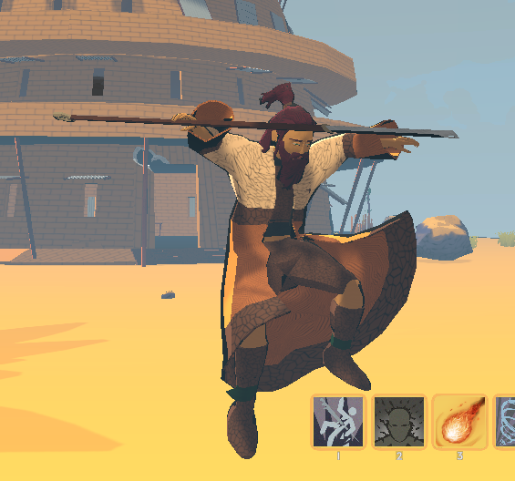
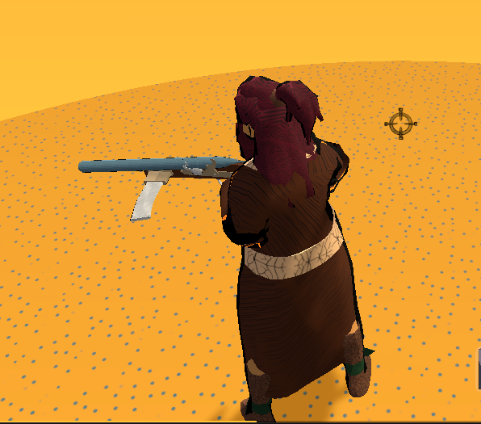
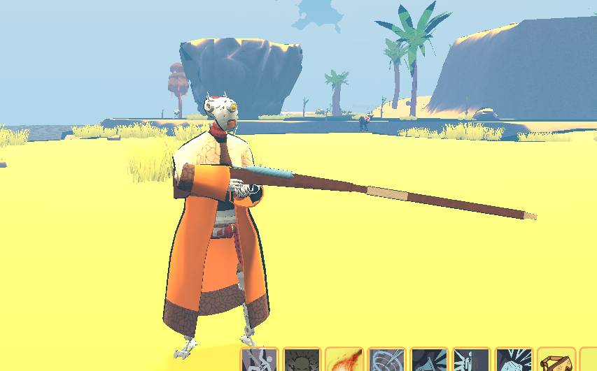
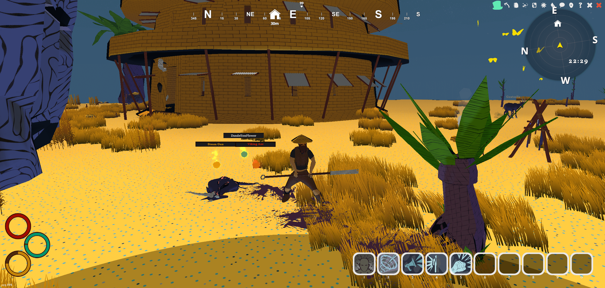
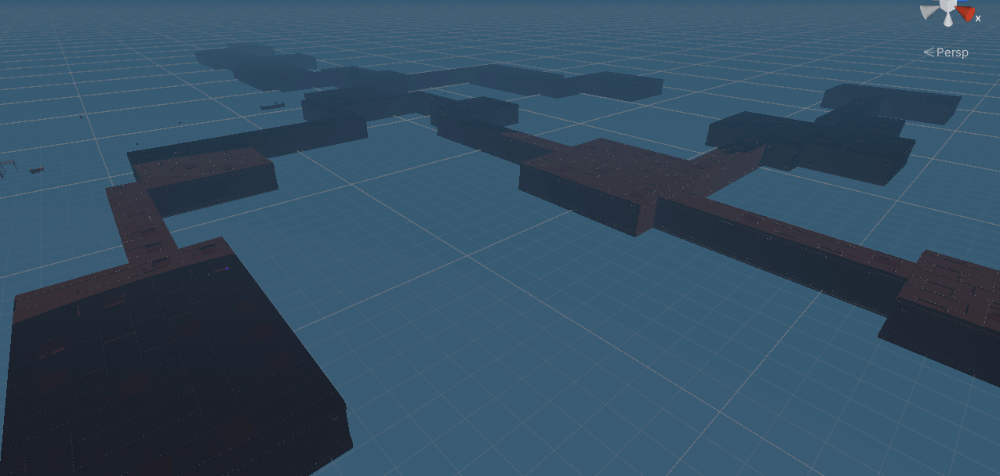
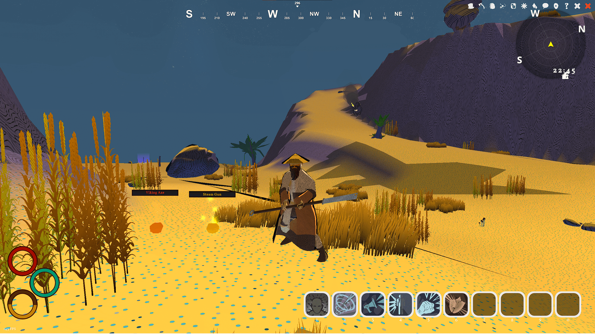
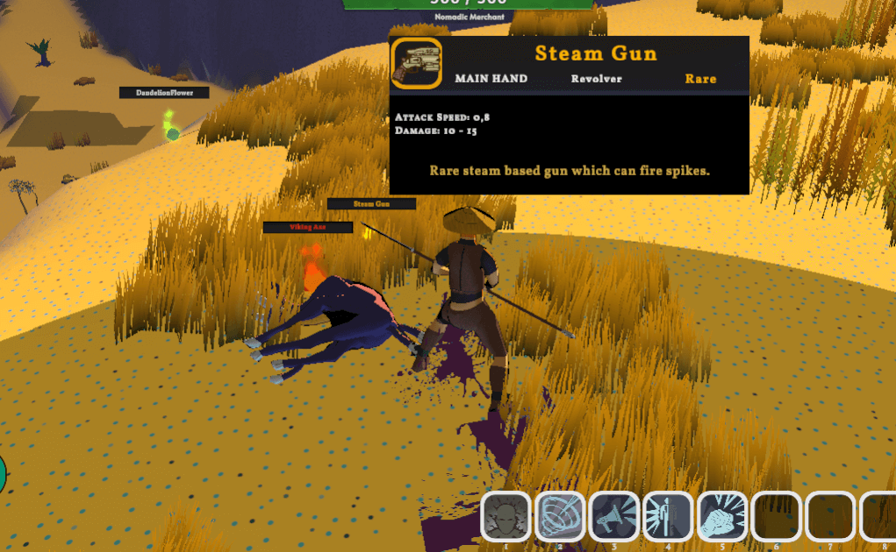

Od posledního updateu uběhla doba, ale to neznamená, že se nic nedělo 🙂
Update k nové verzi enginu
Příprava na alpha testing v prvním kvartálu 2024 Fyzika vlasů a dalších materiálů

Začlenění všech namodelovaných zbraní do hry včetně části útoků a práce na animacích Předělání úvodní scény
Přidání více než 25 backgroundů při tvorbě postavy, které ovlivňují staty i příběh Přepracování získávání surovin ve hřeNová rasa robotů
Přibyla nová rasa robotů rozdělená do dvou skupin - Otroci a Piráti. Robot se stává pirátem ve chvíli, kdy se setká s anomáliemi, které v něm probudí podivné chování a sebeuvědomění. Takové kusy jsou pak loveny jako nebezpečné „vadné“ technologie. Původně je vytvořila Impériální frakce jako pracovní sílu pro obsluhu steampunkových technologií, strojů a vlaků. Ti, kterým se podařilo uniknout, jsou označováni za Piráty, protože je Impérium potřebuje vykreslit jako hrozbu.

Tihle roboti žijí spíš stranou v poušti a močálech, kam se běžní lidé z velkých měst ani nedostanou. Vedou jednoduchý život a věří v cosi, co jim dává vlastní pocit jistoty. Zároveň ale nedokážou přirozeně využívat tu samou energii, které se v tomto světě říká magie, anomálie nebo mana.
Jejich silnou stránkou je talent na práci, vědu a technologii. Jsou také jednou z nejodolnějších ras ve hře. Na druhou stranu mají omezení při používání některých předmětů a hůře snášejí magii.
Progres a problémy
Jak se blíží deadliny a zároveň přichází nové sezóny Diabla, je těžké balancovat práci, sociální sítě i osobní život. Přesto se hra posouvá, jen pomaleji. Plán spustit testování zůstává. Hodně času tak padlo do optimalizace scén a tvorby lepšího terénu. Další velké téma je kompletní přepracování UI, které se posouvá víc směrem k Zelda feelingu.
Každý den přináší nové nápady, ale zároveň je potřeba dokončit základní kostru hry, hlavně gameplay loop s několika questy a možná i dungeonem. I první ostrov ale pořád vypadá minimálně na půl roku práce.

Feedback na nové UI
Co říkáš na nový směr UI?

Co bude dál
Plán je dokončit dungeon, přidat questy a doladit AI monster tak, aby byl první ostrov připravený pro nadcházející alpha testing. Spíš tedy pre-alpha.

Poslední přírůstky
Mezi poslední novinky patří:
Implementace GORE systému - krevní systém, který ovlivňuje vše, na co dopadne Ragdoll systém - některá monstra po smrti pěkně odletí a celé to působí živěji ARPG loot drop systém

Přepínání myši/kurzoru klávesou „F“, aby se lépe sbíraly předměty ze země a interagovalo s prvky ve hře.
Jak vývoj pokračuje, budou přibývat další updatey i vhled do cesty, jak tenhle projekt vzniká.